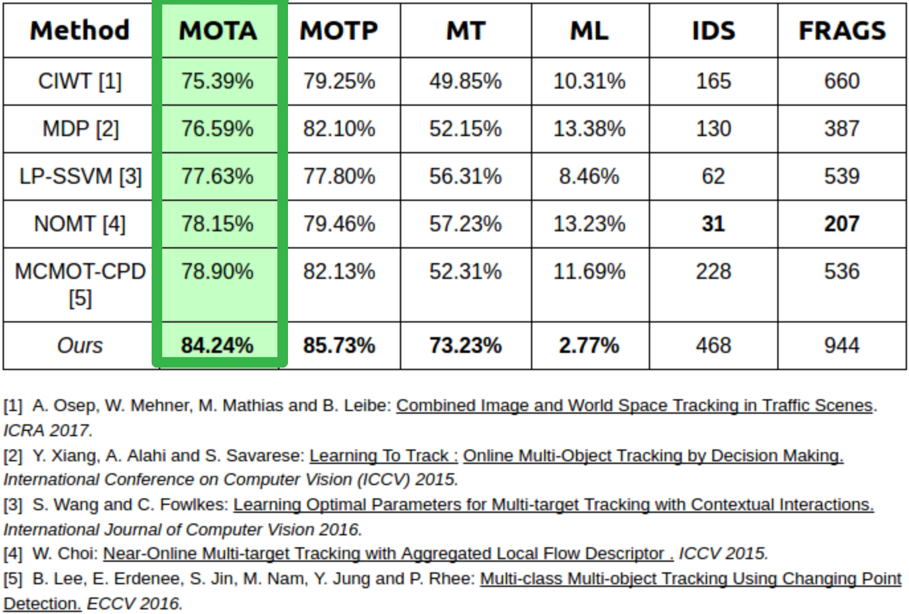
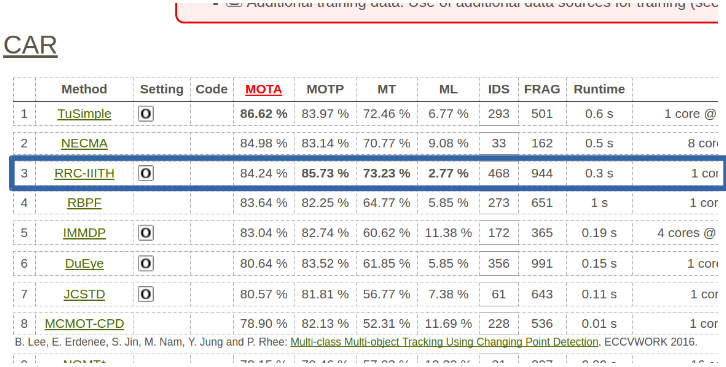

Beyond Pixels: Leveraging Geometry and Shape Cues for Online Multi-Object Tracking
Sarthak Sharma*, Junaid Ahmed Ansari*, J. Krishna Murthy, and K. Madhava Krishna
International Institute of Information Technology, Hyderabad. INDIA
( *Authors with equal contribution)
(Above figure: An illustration of the proposed method. The first two rows show objects tracks in frames t and t + 1. The bottom row depicts how 3D position
and orientation information is propagated from frame t to frame t + 1. This information is used to specify search areas for each object in the subsequent
frame, and this greatly r educes the number of pairwise costs that are to be computed.)
This paper introduces geometry and novel object shape and pose costs for multi-object tracking in road
scenes. Using images from a monocular camera alone, we devise pairwise costs for object tracks, based on several 3D
cues such as object pose, shape, and motion. The proposed costs are agnostic to the data association method and can be
incorporated into any optimization framework to output the pairwise data associations. These costs are easy to implement,
can be computed in real-time, and complement each other to account for possible errors in a tracking-by-detection frame-
work. We perform an extensive analysis of the designed costs and empirically demonstrate consistent improvement over the
state-of-the-art under varying conditions that employ a range of object detectors, exhibit a variety in camera and object
motions, and, more importantly, are not reliant on the choice of the association framework. We also show that, by using
the simplest of associations frameworks (two-frame Hungarian assignment), we surpass the state-of-the-art in multi-object-
tracking on road scenes.
COMPARISION WITH PREVIOUS PUBLISHED APPROACHES
The proposed method (RRC-IIITH) is currently state-of-the-art (amongst the published approaches)
on the KITTI Object Tracking leaderboard. Evaluation results can be found here.


Left: Our method outperforms all published multi-object trackers. Right: Snapshot of KITTI Tracking leaderboard where our method is shown as RRC-IIITH
MOTA(Multi-Object Tracking Accuracy): Indicates how consistently a target is tracked. MOTP(Multi-Object Tracking Precision): Indicates how precisely target is localized. MT(Mostly Tracked): Percentage of cars that are tracked correctly for 80% of the trajectory. Higher is better ML(Mostly Lost): Percentage of cars that are not correctly tracked for 80% of the trajectory. Lower is better
(Please note that our method is completely online i.e. two frame based approach, and no optimization is applied. We will soon be releasing the code with
and without optimization.)